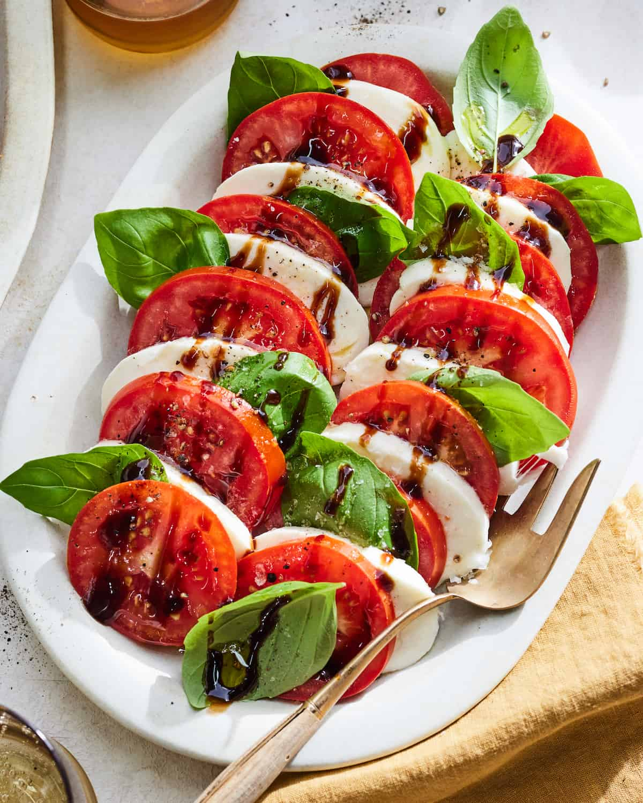

Caprese Salad Recipe

There's nothing quite like a Caprese Salad in the height of tomato season. I find myself making a traditional Caprese Salad 3-4 times a week during the summer. It's also an integral part of a dinner party spread or just paired with my summery turkey meatballs with angel hair pasta. Not only because it's delish, but it's too easy to assemble and works well with just about anything!
Ingridients:
- Ripe tomatoes
- Fresh mozzarella
- Olive oil
- Balsamic glaze
- salt and pepper
Steps:
- Slice a few ripe tomatoes into ¼ inch slices.
- Do the same size slice for a few balls of fresh mozzarella.
- Start by layering slices of tomatoes on a serving platter. Tuck slices of cheese between each tomato so both are visible then tuck whole basil leaves between the cheese and tomatoes. Arrange the slices so you can see every layer.
- Season generously with salt and pepper, drizzle all over with extra virgin olive oil and drizzle with 2 tablespoon balsamic glaze or add it to taste.
Home